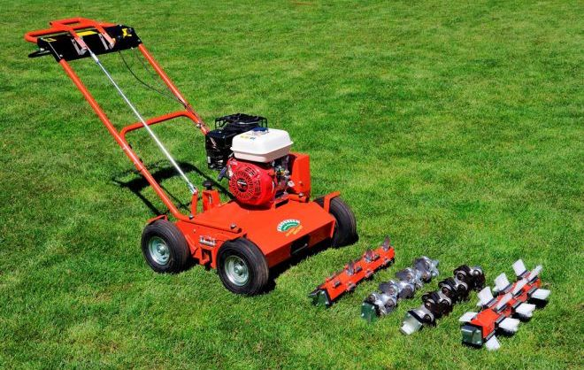

Советы по уходу за участком
-
Организуйте систему полива. Полив – это самый важный аспект ухода за дачным участком. Чтобы растения выглядели здоровыми и красивыми, им необходимо достаточно влаги. Лучше всего организовать систему автоматического полива. В зависимости от погодных условий и типа почвы, установите оптимальное время полива и длительность работы системы.
-
Не забывайте о своевременной обрезке. Своевременная обрезка деревьев и кустарников – это не только красивый вид, но и условие здоровья зеленых насаждений. Периодически удаляйте увядшие ветки, чтобы оставшиеся получили достаточно питательных веществ. Также необходимо подстригать газоны, чтобы они не переросли и не превратились в заросли.
-
Убирайте опавшие листья и сорняки. Опавшие листья и сорняки являются источником болезней для растений. Постоянно удаляйте их с участка, чтобы избежать появления грибков и болезней. Сорняки могут также нанести значительный ущерб растительности, поэтому необходимо проводить регулярное их удаление.
-
Защитите растения от вредителей. На дачном участке всегда имеются вредители, поражающие растения. Не допускайте их развитие, заранее предусмотрев защиту с помощью специальных средств. Можно также посадить растения, которые отталкивают насекомых.
-
Оставляйте участок чистым и аккуратным. Чистота и порядок на участке создают приятную атмосферу, привлекают гостей и способствуют релаксации. Заставьте себя регулярно убирать мусор, вовремя проводить обработку почвы и удалять растительный мусор.
-

Пользуйтесь вертикуттером и аэратором Удаляйте мох и газонный войлок, чтобы обеспечить лучший доступ воды, воздуха и света к траве. Пользуйтесь вертикуттером, когда почва еще влажная (весной и осенью).
-
Удобряйте с умом. Давайте вашему газону необходимое питание, но не переусердствуйте. Два-три раза в год (весна, пик сезона, позднее лето) используйте удобрение долгосрочного действия.
-
Цветы и грядки. С наступлением тепла можно снимать зимнюю «защиту» с многолетних растений, открывая их весеннему солнцу и свежему воздуху. Избавьтесь от сорняков, взрыхлите почву, при необходимости обогатите ее удобрениями, приготовьте все необходимое к посадке однолетних цветов и овощных культур.